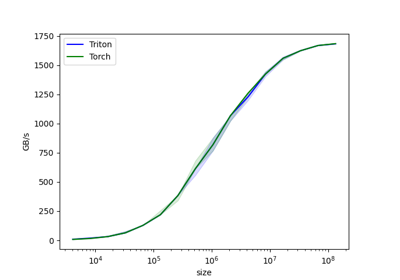
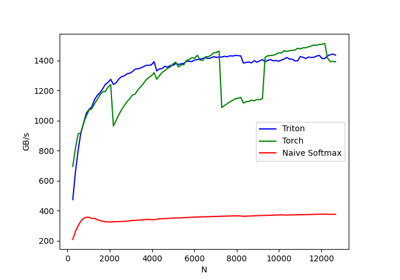
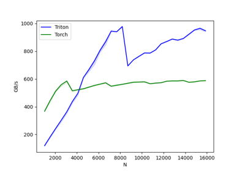
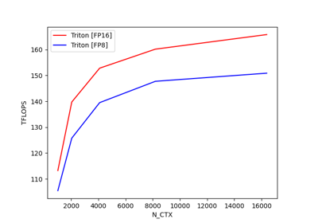
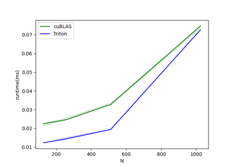

Tutorials¶
Below is a gallery of tutorials for writing various basic operations with Triton. It is recommended that you read through the tutorials in order, starting with the simplest one.
To install the dependencies for the tutorials:
cd triton
pip install -e './python[tutorials]'

Vector Addition

Fused Softmax



Layer Normalization

Fused Attention


Group GEMM